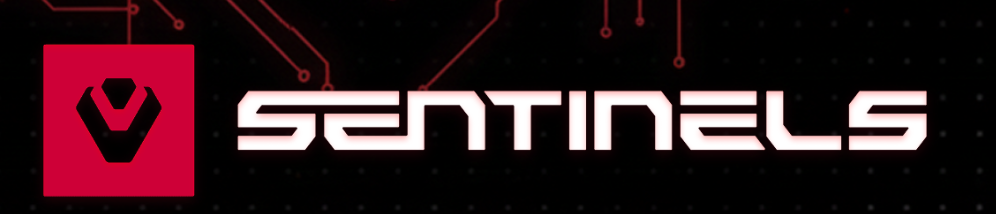
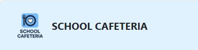

¡Hola! Soy Daniel
Actualmente estudio Desarrollo de Aplicaciones Web y lo que de verdad me mueve es el diseño de interfaces. Me encanta el proceso de transformar una idea en algo visual que sea intuitivo para todo el mundo.
Formación Académica
CFGS Desarrollo de Aplicaciones Web
IES SERPIS
2025 - Presente
Grado Superior de desarrollo Frontend y Backend, bases de datos y despliegue.
Grado Medio Informática
IES ABASTOS
2022 - 2024
Titulo de Grado Medio Informática
Habilidades
- Maquetación avanzada con HTML5 y Sass
- Diseño de interfaces intuitivas (UI/UX)
- Creación de sitios web totalmente responsivos
- Resolución creativa de problemas técnicos
- Optimización de contenidos multimedia
Experiencia & Proyectos
-
Prácticas FCT - Soporte
Mayo 2024 - Junio 2024Soporte técnico y atención al cliente en Quentin Informatica (Cliniwin).
-
Proyecto Página Web Temática eSport
Diciembre 2025Diseño y maquetación de página web temática eSport responsive usando Sass.

Proyecto Página Web School Cafeteria
Diciembre 2025Diseño y maquetación de página web School Cafeteria responsive usando Bootstrap.

Contacto
¿Te ha gustado mi perfil? ¡Escríbeme!
Enviar Correo